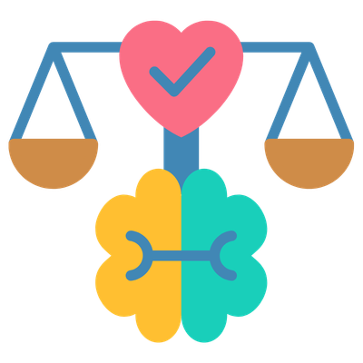
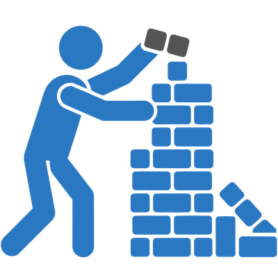
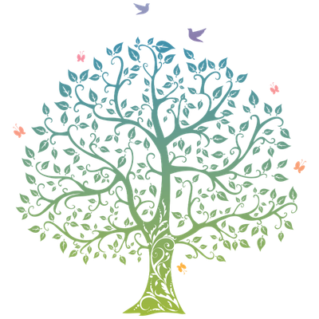
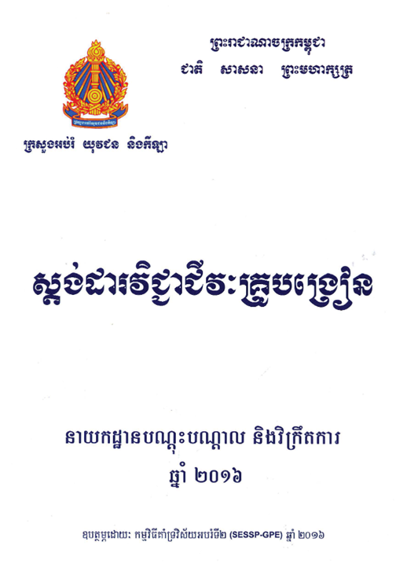

🧭 AI ជា សមត្ថភាពថ្មីក្នុងវិស័យអប់រំ មិនមែនគ្រាន់តែជាឧបករណ៍ទូទៅទេ
🗺️ ក្របខ័ណ្ឌសមត្ថភាព = ផែនទីបង្ហាញផ្លូវ ច្បាស់លាស់
📈 ជួយវាយតម្លៃទំនុកចិត្តបច្ចុប្បន្ន + កំណត់ផ្លូវរីកចម្រើនក្នុងអាជីព
កម្មវិធីថ្មីលេចឡើង ឬបាត់បង់ក្នុងរយៈពេលខ្លី → បញ្ជីនេះអាចលែងទាន់សម័យ
អង្គការ UNESCO បង្កើតក្របខ័ណ្ឌសមត្ថភាព AI សម្រាប់គ្រូបង្រៀន ដែលមាន ៥ សមាសភាគជាមូលដ្ឋាន
មានប្រយោជន៍យូរអង្វែង ទោះឧបករណ៍ផ្លាស់ប្តូរក៏ដោយ



